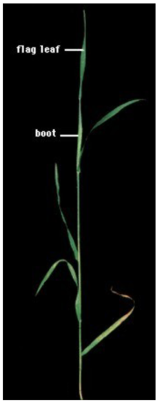

Profitable small grain production requires a thorough knowledge of crop development and growth, and how climate and enviromental factors can influence crop development. Crop and weed response to inputs such as fertilizers, pesticides, plant growth regulators and supplemental irrigation depend on the stages of development rather than on a calendar date. Improper application timing may reduce chemical or fertilizer effectiveness, and, in some cases, result in crop injury and yield loss.
Depending on variety and seasonal growing conditions, barley requires 90 to 110 days to reach maturity.
A growth stage key provides a common reference for describing the crop’s development, such that we can implement agronomic decisions based on a common understanding of which stage the crop has reached.
The most commonly used growth stage key for cereal crops is the Zadoks Decimal Code. The key splits the development of the cereal plant into 100 individual growth stages, which cover 10 distinct phases of development.
Other growth stages systems: Feekes Scale, Haun Scale, BBCH Scale.
Zadoks Code DC
Cereal growth stages
Important notes on herbicide application and crop development
0
Germination
00
Dry kernel
Knockdown herbicides such as glyphosate, paraquat and Spray.seed® can be used up until this crop growth stage.
01
Start of imbibition (water absorption)
05
Radicle emerged
07
Coleoptile emerge
09
Leaf just at coleoptile tip
1
Seedling development
10
First leaf through coleoptile
1st leaf on all cereals has a rounded tip – find this before starting to count leaves.
Most post-emergent herbicides need at least 2 leaves fully expanded on the crop before application.
This could be dependent on herbicide rate. Higher rates should be used at later crop development stages.
Some herbicides need 5 leaves (DC15) on the crop, (not counting tiller leaves) before application.
11
First leaf at least 50% emerged
12
Second leaf at least 50% emerged
13
Third leaf at least 50% emerged
14
Fourth leaf at least 50% emerged
15
Fifth leaf at least 50% emerged
2
Tillering
20
Main shoot only
Crop tiller number is affected by plant density, time of sowing and or environmental conditions – and variety.
Tiller number should only be used as an indicator of how “well” the crop is performing.
It should not be used to determine herbicide timing.
What is the secondary root development like?
In a dry season this can be poor, leading to a crop unable to recover from a herbicide application.
21
Main shoot plus 1 tiller visible
22
Main shoot plus 2 tillers
23
Main shoot plus 3 tillers
24
Main shoot plus 4 tillers
25
Main shoot plus 5 tillers
3
Stem elongation
31
First node detectable
This is when the crop switches from growing leaves (vegetative) to producing grain (reproductive).
Most Group I herbicides should not be applied until now. Growing point is above ground level 2-3 cm.
Use a sharp knife to split the main stem, starting at the base.
A small head should be visible above the air space.
32
Second node detectable
33
Third node detectable
37
Flag leaf just visible
39
Flag leaf collar just visible
Barley now very sensitive to stress.
4
Boot
41
Flag leaf sheath extending
Flag leaf (last leaf) sheath extending
43
Boot just beginning to swell
Boot opposite collar of second last leaf
45
Boot swollen
Boot above collar of second last leaf
47
Flag leaf sheath opening
49
First awns visible
5
Head emergence
51
First spikelet of head just visible
53
One-fourth of head emerged
55
One-half of head emerged
57
Three-fourths of head emerged
59
Head emergence complete
6
Flowering (not readily visible in barley)
61
Beginning of flowering
early flowering
65
Half of florets have flowered
mid flowering
69
Flowering complete
late flowering
7
Milk development in kernel
71
Kernel watery ripe
73
Early milk
75
Medium milk
77
Late milk
8
Dough development in kernel
83
Early dough
85
Soft dough
2,4-D can be used for preharvest spraying.
87
Hard dough, head losing green color
Glyphosate can be used – don’t keep seed for sowing or sprouting.
89
Approximate physiological maturity
9
Ripening
91
Kernel hard (difficult to divide with thumbnail)
92
Kernel cannot be dented by thumbnail, harvest ripe
Development
Crop development is measured by progress through growth stages. Crop processes switch on or off at key stages (GSs 21, 31, 39, 59, 71 and 87).
Development can only be altered by variety choice and sowing date. Subsequent management decisions aim to influence growth during a developmental phase, i.e. by controlling disease or applying fertilizer.
The speed at which a crop progresses through each developmental stage is governed by:
Temperature— warm conditions speed up development.
Vernalisation— cool, not freezing, temperatures advance the start of flower initiation in young plants.
Photoperiod — long days advance floral development.
Germination
The minimum temperature for germination of barley is 1 – 2°C. After the seed takes up moisture, the primary root (radicle) emerges. The radicle grows downward, providing anchorage and absorbing water and nutrients, and eventually develops lateral branches. Other roots formed at the level of the seed make up the seminal root system. These roots become highly branched and remain active throughout the growing season.
After the radicle emerges from the seed, the first main shoot leaf emerges. It is enclosed within the coleoptile for protection as it penetrates the soil. As a result, the seeding depth should not exceed the length that the coleoptile can grow, usually no more than 6-7 cm.
Seedling development and leaf production
Once the seedling has emerged, the coleoptile ceases elongating and the first true leaf appears. Then leaves appear about every 3 to 5 days depending on the variety and conditions. Eight or nine leaves are usually formed on the main stem, with later maturing varieties usually forming more leaves.
Emergence of the final leaf, termed the flag leaf, is an important growth stage for timing the application of certain growth regulators.
Tillering
When the seedling has about three leaves, tillers usually begin to emerge. Ability of barley plants to tiller is an important method of adapting to changing environmental conditions. When environmental conditions are favorable or if the plant density is reduced, compensation is possible by producing more tillers. Under typical cultural conditions for spring barley, tillers emerge during about a 2 – week span with the total number formed depending on the variety and environmental conditions. Deep seeding and high seeding rates usually decrease the number of tillers formed per plant. There may be more tillers formed when early season temperatures are low, when the plant population is low, or when the soil nitrogen level is high. Some tillers initiate roots, contributing to the nodal root system. About four weeks following crop emergence, some of the previously formed tillers begin to die without forming a head. The extent to which this premature tiller death occurs varies depending on the environmental conditions and the variety. Under poor or stressed growing conditions, plants respond by forming fewer tillers or by displaying more premature tiller death.
Stem elongation
Until jointing, the plant apex or growing point is below the soil surface where it is protected somewhat from frost, hail, or other mechanical damage. Between 3 and 4 weeks after plant emergence, the upper internodes of the stem begins to elongate, moving the growing point above the soil surface. The head also begins to grow rapidly, although it is still too small to readily detect through the surrounding leaf sheaths. During the “boot” stage, the head becomes prominent within the flag leaf sheath.

Boot, head emergence, flowering
Pollination usually takes place in barley just before or during head emergence from the boot. Pollination begins in the central portion of the head and proceeds toward the tip and base. This event occurs 6 to 7 weeks after crop emergence. Since pollen formation is sensitive to stress, water deficits and high temperatures at this time will decrease the number of kernels that form and may reduce yields. These yield reductions can be diminished by planting early so that pollination and early grain filling is completed before late season stresses occur.
Kernel development and ripening
Kernel development in barley a/ watery ripe; b/ late milk; c/ hard dough; d/ harvest ripe (Zadoks 92)
Once head emergence and pollination have occurred, kernels begin to develop. The length of the barley kernel is established first, followed by its width.
This helps explain why thin barley developed under stress conditions is usually as long as normal grain, but is narrower. The first period of kernel development, designated the “watery ripe” and “milk” stages, lasts about 10 days. Although the kernels do not gain much weight during this phase, it is extremely important because it determines the number of cells that will subsequently be used for storing starch. Kernels crushed in this stage initially yield a watery substance which later becomes milky. Kernels that are storing starch and growing rapidly are characterized by a white semi-solid consistency termed “soft dough”. This period usually lasts about 10 days following the milk stage. Finally, as the kernel approaches maturity and begins losing water rapidly, its consistency becomes more solid, termed “hard dough”. This is when the kernel also loses its green color.
When kernel moisture has decreased to about 30 to 40%, it has reached physiological maturity and will not accumulate additional dry matter. The final yield potential has been established at this time. An easily identified field indicator of physiological maturity is 100% loss of green color from the glumes and peduncle. Although the moisture content of the grain is still too high for direct combining, it can be swathed and windrowed. When kernel moisture has decreased to 13 to 14%, the barley kernel is ready for combining and threshing.
Physiological maturity indicator in barley. All green color is gone from the glumes (a) and peduncle (b).
Taking measurements
Field staging form
Identify the development stage of at least 10 plants each of the crop and record them on one of the staging forms. For example
Crop Spring barleyField No.1001E Date13.05
Plant number
1
2
3
4
5
6
7
8
9
10
Avg.
No. of main stem leaves
4
5
4
5
5
5
4
5
5
5
5
No. of tillers
2
1
2
2
2
2
1
2
2
2
2
No. of Main Stem Nodes
0
0
0
0
0
0
0
0
0
0
0
Flag leaf (yes/no)
n
n
n
n
n
n
n
n
n
n
n
Boot stage (yes/no)
n
n
n
n
n
n
n
n
n
n
n
Headed (yes/no)
n
n
n
n
n
n
n
n
n
n
n
Flowered (yes/no)
n
n
n
n
n
n
n
n
n
n
n
Grain development stage
-
-
-
-
-
-
-
-
-
-
-
How to handle plants
Locate the first leaf.
The first leaf:
Is the lowest leaf and has a blunt tip;
May be dead or missing. Look for leaf and sheath remnants at the crown
Sheath encloses all later leaves
Arises on the opposite side of the plant as the coleoptilar tiller (if present) and the remnants of the coleoptile.
Position the plant.
Hold plant so that the first leaf points to your left and carefully fan-out the leaves and tillers. Follow this procedure for consistent results in staging.
Locate the main shoot or stem.
The mail shoot or stem is usually the tallest and has the most leaves.
How to stage the plants
Count the leaves on the main shoot or stem.
leaves arise on opposite sides of the main shoot or stem
Count the youngest leaf when it is at least one-half of the lenght of the leaf below it when using Feekes or Zadoks scale. However, when using the Haun scale, count the youngest leaf as a fraction of its lenght relative to the lenght of the leaf below it.
When positioned correctly, all leaves on the left side of the main stem are designated with the odd number and on the right side with an even number. The coleoptilar tiller (if present) and the remnants of the coleoptile are also located on the right side of the plant.
Dead or missing leaves must be counted. Look for leaf and sheath remnants at the crown.
Count the tillers
Each tiller has its own sheath called a prophyll which encloses its base. Leaves outside the prophyll belong to the main shoot or to other tillers.
Secondary and tertiary tillers also may be formed, so more than one tiller may emerge from each leaf axil of the main shoot.
Tillers that emerge after the fifth leaf has emerged are not likely to produce heads and need to be counted.
Count the nodes
Nodes can easily be seen or felt on the stem above ground level.
If no nodes are detected above ground, split the main shoot lengthwise to determine if stem elongation has begun. The elongation internode is hollow between the crown and the elevated growing point. In solid stem varieties the internode is not hollow but nodes are still easily identified.
Has the flag leaf emerged?
The flag leaf emerges after at least three nodes are present above the soil surface.
To confirm flag leaf emergence, split the leaf sheath above the highest node. If the developing head and no additional leaves are contained inside, then the last leaf emerged was the flag leaf.
Has the boot stage begun?
Boot stage in the Zadoks scale begins following emergence of the flag leaf collar and continues until heading. In the Feekes and Haul scales, boot stage follows flat leaf extension and continues until heading.
Has head emergence and flowering occured?
Heading begins when the first awns become visible through the flag leaf collar.
Examine florets to determine if flowring has occured. Most barley varieties flower prior to head emergence
Determine grain development stage
Grain development stages include watery ripe, milk, soft dough, hard dough, kernel hard and harvest ripe.
Plant population
Take at least four samples (more if variable) across the field. Throw down a quadrate (square frame) and count plants inside it. Divide by the area (m2) of the quadrate to get plants/m2. Alternatively, count plants growing along a measured length of row; divide by the row width (m) and length (m) to determine plants/m2.
Use the same method to work out shoot numbers/m2, counting shoots instead of plants.
Crop canopy
Measure crop canopy as Green Area Index (GAl), i.e. surface area of green material (one side only) divided by ground area occupied. If all leaves, shoots and ears from 1 m2 of a field, separated and laid out adjacent and flat, cover 2 m2, then GAl = 2. If they cover 4 m2, GAl = 4.
Alternatively, it is possible to assess the GAI by comparison with crops of known GAI.
*GAI (Green Area Index) – the ratio of leaf green area to the area of ground on which the crop is growing, is a useful tool in canopy management.